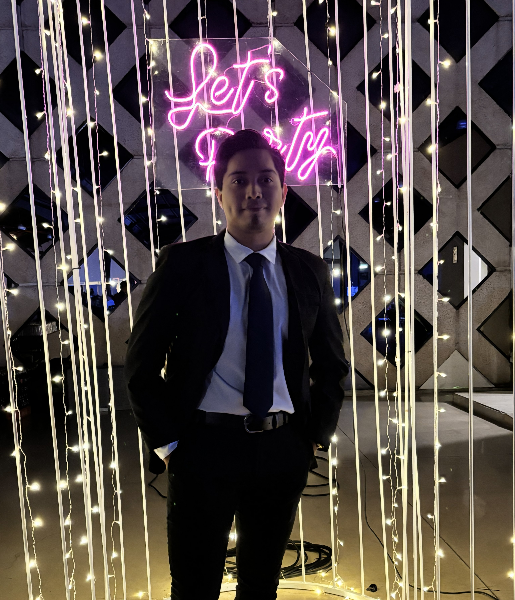
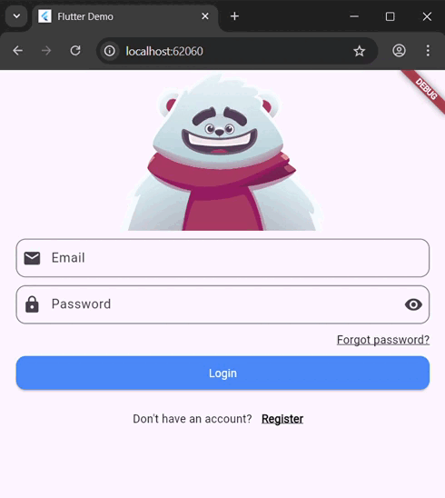

¡Hola! Soy estudiante y entusiasta del desarrollo de software y la graficación 3D. Me apasiona construir entornos inmersivos y optimizados, desde la lógica del código hasta el el modelado de componentes de hardware. Este portafolio simula mi entorno ideal: un setup gamer funcional adaptado para la web.
Modelo de un setup ideal diseñado en Blender, con texturas añadidas y elementos importados como el mouse, la silla, libros y planta.

Proyecto de una interfaz para inicio de sesión utilizando la herramienta RIVE.
¿Quieres colaborar en un proyecto? ¡Escríbeme por cualquiera de mis canales activos!